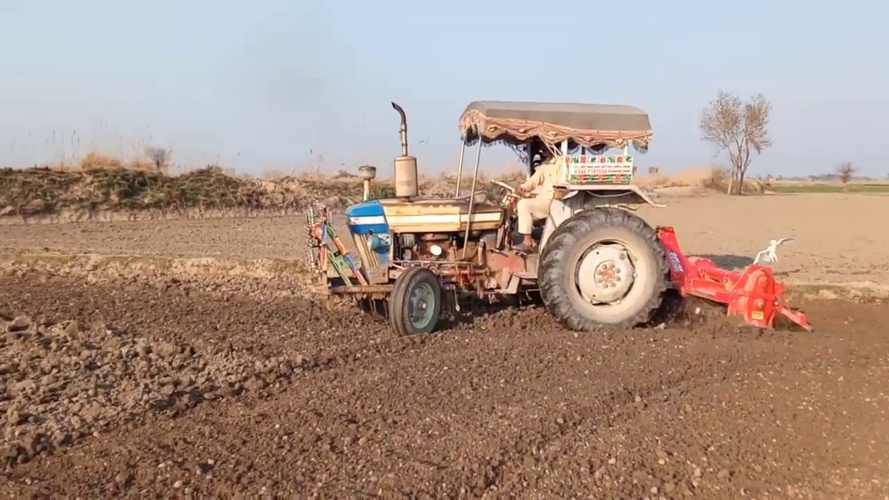
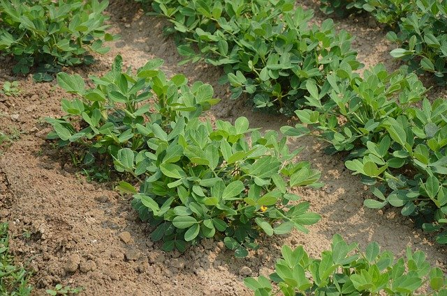
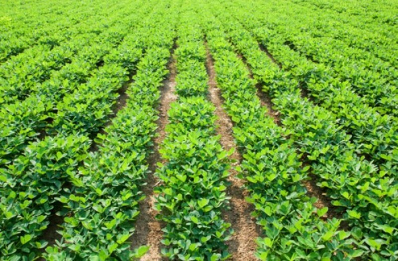
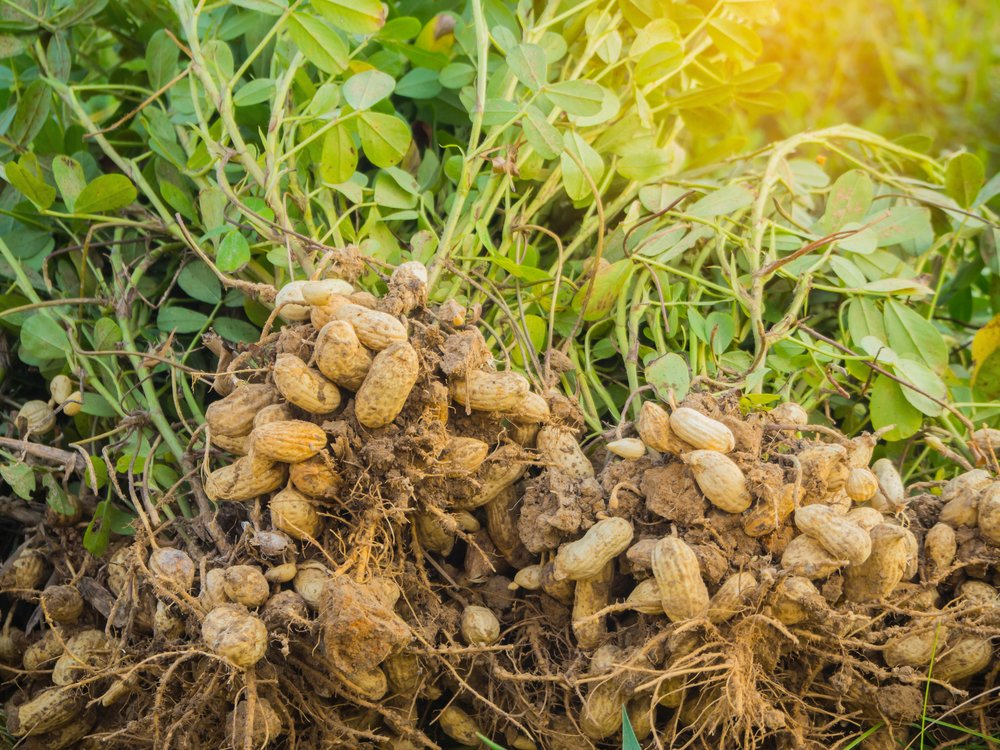
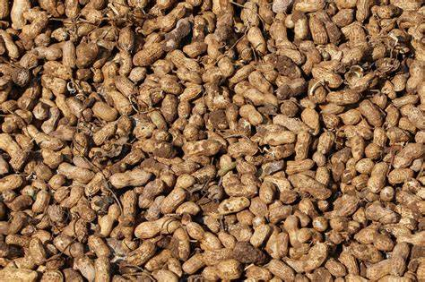

मूंगफली की खेती और रोग रोकथाम





मूंगफली एक प्रमुख तिलहन फसल हैं. जिसे गरीबों का काजू भी कहा जाता है. इसका ज्यादा इस्तेमाल तेल बनाने में किया जाता हैं.
इसके अलावा खाने में भी इसका काफी ज्यादा इस्तेमाल होता है. मूंगफली के इस्तेमाल से कई तरह की खाने की चीजें बनाई जाती है.
मूंगफली मानव शरीर को सबसे ज्यादा उर्जा प्रदान करती है. मूंगफली के अंदर 25 प्रतिशत से भी ज्यादा प्रोटीन की मात्रा पाई जाती है.
मूंगफली में पाई जाने वाली प्रोटीन की ये मात्रा मॉस, अंडे, दूध और घी जैसी उच्च प्रोटीन वाली चीजों से भी ज्यादा होती है.
मूंगफली को उष्णकटिबंधीय जलवायु का पौधा माना जाता है. इसके पौधे को ज्यादा बारिश की जरूरत नही होती.
इसकी खेती जायद और खरीफ के मौसम में की जाती है. इसके पौधे पर फल जमीन के अंदर लगते हैं. जिन्हें मिट्टी खोदकर निकाला जाता है.
अगर आप भी मूंगफली की खेती करने का मन बना रहे हैं तो आज हम आपको इसकी खेती के बारें में सम्पूर्ण जानकारी देने वाले हैं.
मूंगफली की खेती के लिए उचित जल निकासी वाली हल्की पीली दोमट मिट्टी सबसे उपयुक्त होती है. जबकि कठोर चिकनी जल भराव वाली जमीन में इसकी खेती नही की जा सकती.
क्योंकि कठोर भूमि में इसकी फलियों को निकालने में काफी ज्यादा परेशानी होती है. इसकी खेती के लिए भूमि का पी.एच. मान 6 से 7 के बीच होना चाहिए.
मूंगफली की खेती उष्णकटिबंधीय जलवायु वाले प्रदेशों में की जाती है. भारत में इसकी खेती ज्यादातर शुष्क प्रदेशों में की जाती है.
इसके पौधे को अच्छी तरह विकास करने के लिए सूर्य के प्रकाश और गर्मी की आवश्यकता होती है. इसकी खेती के लिए 60 से 130 सेमी. वर्षा काफी होती हैं.
इसके पौधों को अंकुरण के लिए शुरुआत में 15 डिग्री के आसपास तापमान की आवश्यकता होती है.
अंकुरित होने के बाद पौधों को विकास करने के लिए सामान्य तापमान की आवश्यकता होती है. लेकिन इसका पौधा 35 डिग्री तापमान को भी सहन कर लेता है.
खेत की तैयारी
मूंगफली की पैदावार के लिए खेत की तैयारी अच्छी होनी चाहिए, इसकी खेती के लिए मिट्टी का भुरभुरा होना अच्छा होता है.
इसके लिए खेत की जुताई करते वक्त पहली जुताई मिट्टी पलटने वाले बड़े पलाऊ हलों से करनी चाहिए.
उसके बाद मिट्टी को तेज़ धूप लगने के लिए खुला छोड़ दें. और कुछ दिन बाद खेत में 15 गाडी
प्रति एकड़ के हिसाब से पुरानी गोबर की खाद डालकर उसे कल्टीवेटर के माध्यम से खेत में अच्छे से मिला दें.
खाद को मिलाने के बाद खेत का पलेव कर दें. पलेव करने के तीन से चार दिन बाद जब खेत में खरपतवार निकल
आयें तब रोटावेटर चलाकर खेत की अच्छे से जुताई कर मिट्टी को भुरभुरा बना लें.
उसके बाद मिट्टी को समतल बनाने के लिए खेत में पाटा लगा दें.
बीज रोपाई का तरीका और टाइम
मूंगफली के बीजों की बुवाई बारिश के शुरू होने के साथ ही की जाती है. इसकी बुवाई का सबसे उपयुक्त टाइम मध्य जून से मध्य जुलाई का होता है.
बीज की बुवाई से पहले फलियों से बीज को निकालकर उसे थीरम, मेन्कोजेब या कार्बेन्डाजिम से उपचारित कर लेना चाहिए.
इससे बीजों का कई रोगों से बचाव हो जाता है. और बीजों के अंकुरण की मात्रा में भी वृद्धि होती है.
मूंगफली के बीजों की रोपाई मशीन में माध्यम से समतल भूमि में की जाती है. कम फैलने वाली गुच्छेदार
किस्मों की रोपाई के दौरान पंक्तियों के बीच की दूरी 30 सेंटीमीटर के आसपास होनी चाहिए. और अधिक फैलने वाली किस्मों
के लिए पंक्तियों के बीच की दूरी 45 से 50 सेंटीमीटर के बीच होनी चाहिए.
पंक्तियों में लगाए जाने वाले बीजों के बीच लगभग 15 सेंटीमीटर की दूरी होनी चाहिए. और इनको जमीन में 5 से 6 सेंटीमीटर गहराई में लगाना चाहिए.
पौधों की सिंचाई
मूंगफली खरीफ की फसल होने के कारण इसके पौधों को ज्यादा सिंचाई की आवश्यकता नही होती.
क्योंकि खरीफ के वक्त बारिश का मौसम बना रहता है. लेकिन अगर बारिश टाइम पर ना हो तो पौधों को पानी आवश्यकता के अनुसार देना चाहिए.
बारिश के बाद इसके पौधों को 20 दिन के अंतराल में पानी देना चाहिए.
पौधों में फूल और फलियों के बनने के दौरान खेत में नमी की मात्रा बनी रहनी चाहिए.
फलियों के बनने के दौरान उचित पानी मिलने पर फलियों की संख्या में वृद्धि होती है. जिससे पैदावार में भी इजाफा देखने को मिलता है.
उर्वरक की मात्रा
मूंगफली के पौधों को उर्वरक की ज्यादा जरूरत होती है. उर्वरक उचित मात्रा में मिलाने पर पौधों पर लगने वाली फलियाँ अधिक मजबूत और ज्यादा मात्रा में बनती हैं.
जिससे पैदावार भी बढती है. इसके लिए खेत की जुताई के वक्त 15 गाडी पुरानी गोबर की खाद को खेत में डालकर अच्छे से मिला दें.
उसके बाद खेत की आखिरी जुताई के पहले एन.पी.के. की 60 किलो मात्रा प्रति हेक्टेयर की दर से खेत में फैला दें.
इसके अलावा 250 किलो जिप्सम प्रति हेक्टेयर के हिसाब से खेत में फैला दें.
मूंगफली की खेती में नीम की खली का प्रयोग सबसे उपयुक्त होता है. नीम की खली की वजह से इसकी पैदावार में इजाफा देखने को मिलता है.
इस कारण खेत की आखिरी जुताई के वक्त लगभग 400 किलो नीम की खली प्रति हेक्टेयर के हिसाब से खेत में छिड़क दे.
खरपतवार नियंत्रण
मूंगफली की खेती खरपतवार मुक्त होनी चाहिए. क्योंकि खरपतवार अधिक होने के कारण इसकी पैदावार में 30 प्रतिशत तक नुक्सान हो जाता है. क्योंकि मूंगफली की फलियाँ जमीन में सामान्य गहराई में लगती है. और दूब, प्याज़ा, सामक और मेथा जैसी खरपतवार की जड़ें भी सामान्य गहराई में ही फैलती हैं. जिससे इसकी पैदावार में नुक्सान होता है.
मूंगफली की खेती में खरपतवार नियंत्रण रासायनिक और परम्परागत तरीके से किया जाता हैं.
परम्परागत तरीके से खरपतवार नियंत्रण के लिए खेत की तीन से चार नीलाई गुड़ाई की आवश्यकता होती है.
इसके पौधों की पहली गुड़ाई बीज रोपाई के 20 से 25 दिन बाद कर देनी चाहिए. उसके बाद 20 दिन के अंतराल में दो गुड़ाई और कर देनी चाहिए.
जबकि रासायनिक तरीके से खरपतवार नियंत्रण के लिए खेत में पेन्डिमेथालिन की
3 लीटर मात्रा को 500 लीटर पानी में में मिलाकर उसका छिडकाव बीज रोपाई के पहले और दो दिन बाद तक किया जा सकता है.
पौधों में लगने वाले रोग और रोकथाम
बीज सडन
मूंगफली के पौधों पर ये रोग उनकी प्रारम्भिक अवस्था में लगता है.
इस रोग के लगने पर अंकुरित होने वाला बीज या तो अंकुरित ही नही होता या होने के बाद उसका पौधा सड़ने लगता है.
इस रोग के लगने के दौरान पौधे के तने पर हल्के भूरे रंग के धब्बे बनने लगते हैं.
इस रोग की रोकथाम के लिए बीज को थिरम की उचित मात्रा से उपचारित कर खेत में उगाना चाहिए. इसके अलावा प्रमाणित बीज को ही खेत में उगाना चाहिए.
पर्ण चित्ती
मूंगफली के पौधों पर पर्ण चित्ती का रोग सर्कोस्पोरा परसोनाटा कवक के माध्यम से फैलता है.
इस रोग का प्रभाव पौधों के जन्म लेने के एक से दो महीने बाद दिखाई देता है. इस रोग की वजह से पौधे की पत्तियां समय से पहले ही गिर जाती हैं.
पत्तियों पर शुरुआत में काले भूरे रंग के धब्बे दिखाई देते हैं. जो धीरे धीरे बड़े होते जाते हैं. इस रोग की वजह से पौधों में आने वाली फलियाँ कम और छोटी प्राप्त होती है.
इस रोग की रोकथाम के लिए पौधों पर डाइथेन एम-45 का 10 दिन के अंतराल में दो से तीन बार छिडकाव करना चाहिए.
लीफ माइनर
मूंगफली की खेती में लीफ माइनर का रोग काफी ज्यादा देखने को मिलता है. इस रोग के लगने पर पौधों की पत्तियों पर सफ़ेद भूरे रंग की लाईने दिखाई देने लगती है.
जिसके कुछ दिन बाद पौधे की पत्तियों का रंग पीला दिखाई देने लगता है.
इस रोग की रोकथाम के लिए पौधों पर एमिडाक्लोरपिड की उचित मात्रा का छिडकाव करना चाहिए.
रोजेट रोग
मूंगफली के पौधों पर लगने वाला ये रोग विषाणु जनित रोग है. इस रोग के लगने पर पौधे वृद्धि करना बंद कर देते हैं.
जिससे पौधे बौने दिखाई देते हैं. इसके अलावा पौधे की पत्तियों का रंग पीला दिखाई देनें लगता है.
इस रोग की रोकथाम के लिए पौधों पर एमिडाक्लोरपिड की उचित मात्रा का छिडकाव करना चाहिए.
जड़ सडन
जड़ सडन का रोग बारिश के मौसम में ज्यादा देखने को मिलता है. इस रोग की वजह से पौधे का तना सुखने लगता है.
जिसकी वजह से पत्तियों को पोषण की मात्रा ना मिल पाने के कारण मुरझाने लगती हैं. और उनका रंग पीला दिखाई देने लगता है.
इसके अलावा जमीन के पास से तने पर भूरे सफ़ेद रंग का आवरण बन जाता है. इस रोग की रोकथाम के लिए पौधों की जड़ों में थिरम या कार्बनडाईजिन का छिडकाव करना चाहिए.
और बीज हो हमेशा उपचारित कर ही उगाना चाहिए.
सफेद लट
सफेद लट मूंगफली की पैदावार को सबसे ज्यादा नुक्सान पहुँचाती है. इस रोग का कीड़ा जमीन के अंदर और बाहर दोनों जगह पाया जाता है.
जो जमीन के अन्दर पौधों की जड़ों को खाकर उन्हें नुक्सान पहुँचाता हैं. जिससे पौधा जल्द ही नष्ट हो जाता है.
जबकि जमीन के बहार इस रोग के कीट पौधे की पत्तियों को खाते हैं. जिससे सम्पूर्ण पौधा नष्ट हो जाता है.
इस रोग की रोकथाम के लिए पौधों पर क्लोरोपायरिफॉस का छिडकाव करना चाहिए.
इसके अलावा खेत की जुताई के वक्त खेत में 25 किलो फोरेट का प्रति हेक्टेयर के हिसाब से छिडकाव कर खेत की मिट्टी में मिला दें.
मूंगफली की खुदाई
मूंगफली की फसल लगभग चार महीने में खुदाई के लिए तैयार हो जाती है. इसके पौधों की खुदाई पौधे के पूर्ण रूप से पकने पर करनी चाहिए.
इसका पौधा जब पीला दिखाई देने लगे और नीचे की पत्तियां गिरने लगे तब इसकी खुदाई करें.
मूंगफली की खुदाई वर्तमान में मशीनों से की जा रही है. जिससे किसान भाइयों को मूंगफली की खुदाई के लिए लगने वाला टाइम और रुपये दोनों की ही बचत होती है.
साथ ही उनकी फसल खराब होने से भी बच जाती है. मूंगफली की खुदाई के बाद उन्हें तेज़ धूप में सुखाना चाहिए. क्योंकि खुदाई द्वारा प्राप्त मूंगफलीयों में नमी की मात्रा ज्यादा होती है.
जिससे इसकी फलियों में फफूंदी का रोग लगने की संभावना बढ़ जाती है. इस कारण इन्हें लगभग 10 प्रतिशत नमी रहने तक सुखाते हैं.